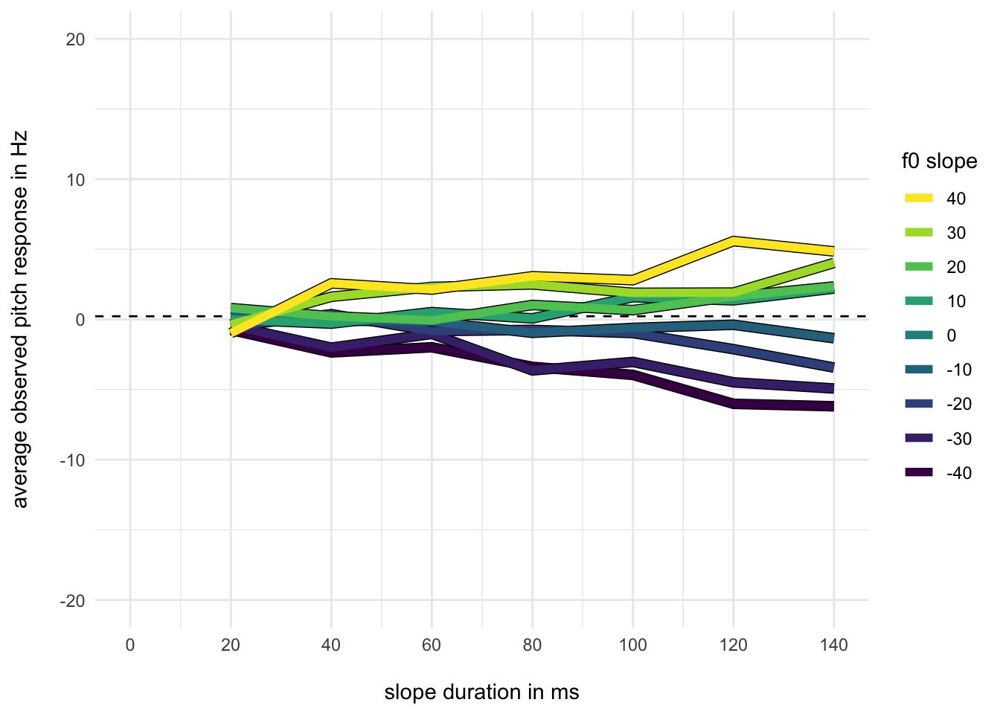
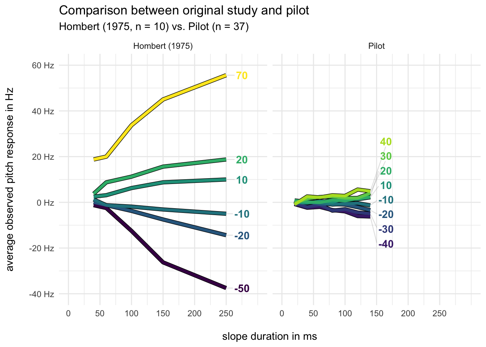
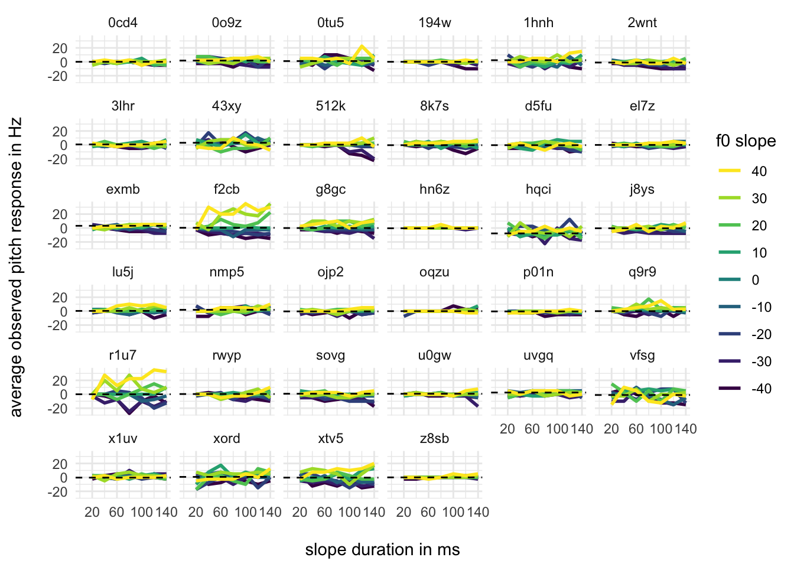
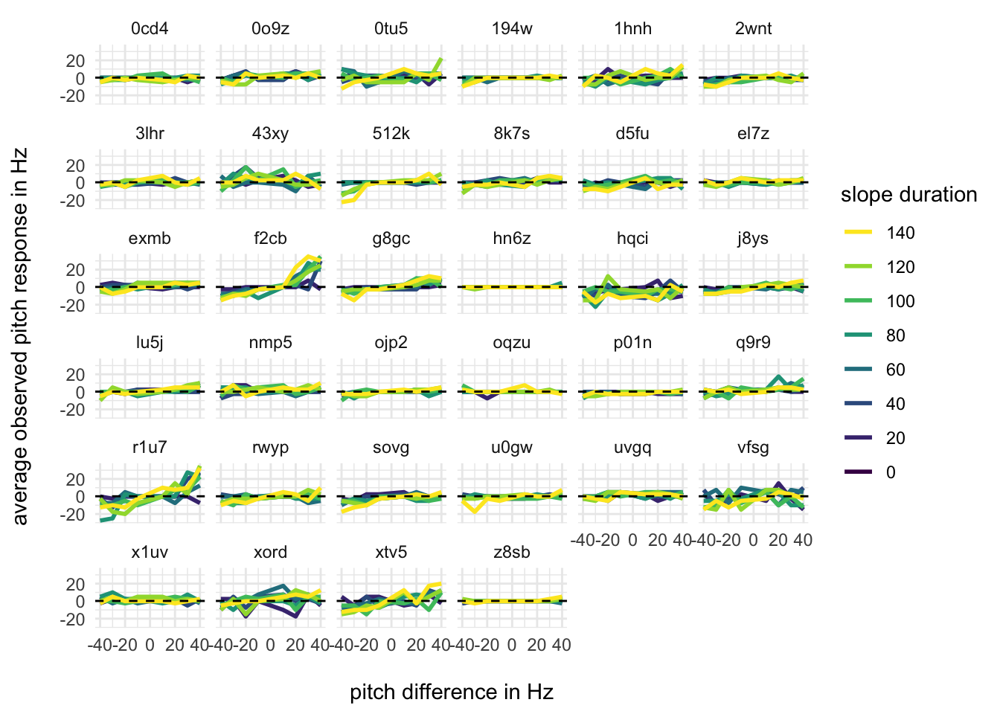
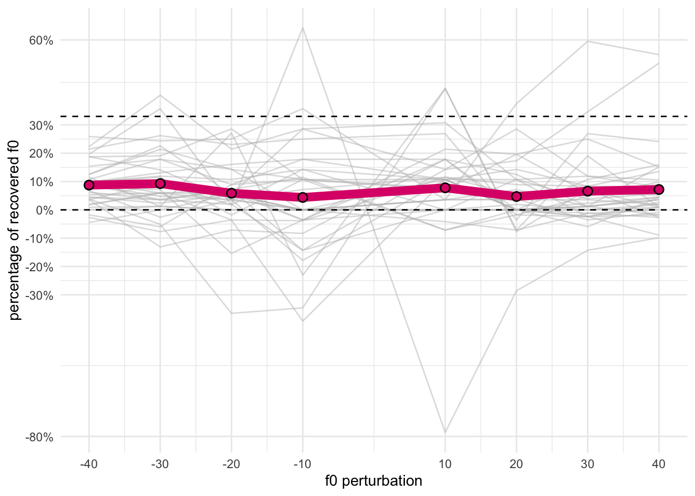
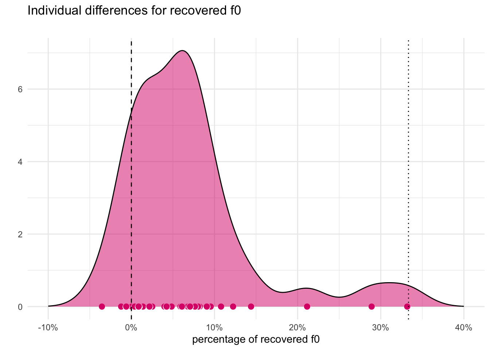

Descriptive Exploration
Descriptive exploration
We explore how pitch perception changes as a function of the f0 slope (delta_f) and the slope duration (delta_t).
Overall means
Now we compare these pilot results to the projected results based on Hombert (1975).

It becomes clear that whatever Hombert (1975) has observed based on 10 American speakers is hardly representative of our pilot results. Looking at only those slope combinations that were used in both Hombert (1975) and our pilot, we can see that the effect magnitudes are substantially smaller:
| delta_t | -20 | -10 | 10 | 20 |
|---|---|---|---|---|
| 40 | 0.37 | -0.08 | -0.30 | 0.22 |
| 60 | -0.83 | -0.15 | 0.52 | -0.07 |
| 100 | -0.97 | -0.61 | 1.59 | 0.66 |
| delta_t | -20 | -10 | 10 | 20 |
|---|---|---|---|---|
| 40 | 0.00 | 1.25 | 2.50 | 3.75 |
| 60 | -1.25 | -1.25 | 3.12 | 8.75 |
| 100 | -3.75 | -1.88 | 6.25 | 11.25 |
Project data from Hombert (1975), projected onto reference value of 150Hz, compared to pilot data
3-dimensional
Plotting linear prediction of pilot results in three dimensions:
Individual differences
Let’s have a look at individual differences across the pilot data:

The majority of listeners do not seem to show much sensitivity to the manipulation. Two notable exceptions are f2cb and r1u7 who show sensitivity to the directional manipulation of f0 slope.
An alternative perspective can be gained from switching the aesthetic mappings:

To quantify these individual differences, we calculate one metric across all conditions that captures the recovered f0 from the target stimulus. First we explore the proportion of recovered f0 across all f0 perturbations:

It does not look like as if the amount of f0 perturbation matters for the recovered f0. As opposed to the literature, the average recovered pitch lies between 0 and 10% and not at 1/3 as predicted by Rossi’s work.

Looking at he distribution of participants’ average recovered f0, we can see a strong mode between 0 and 10% with three outliers that recover f0 above 20%.